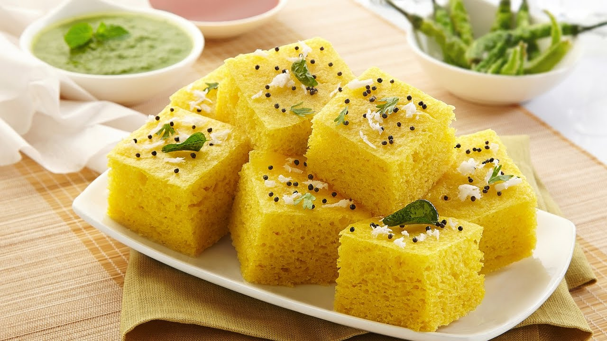
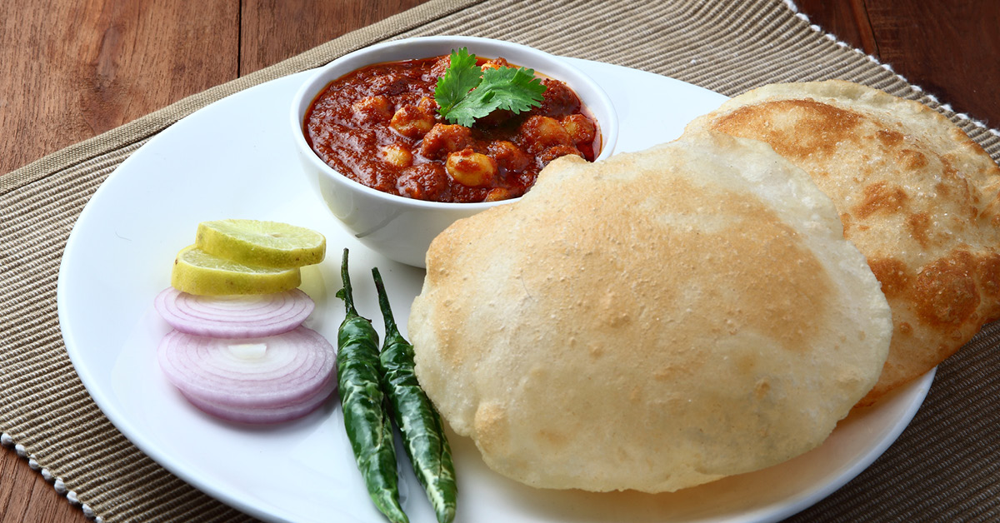

Dosa

A dosa is a rice pancake, originating from South India, made from a fermented batter. It is somewhat similar to a crepe in appearance. Its main ingredients are rice and black gram, ground together in a fine, smooth batter with a dash of salt. Dosas are a common part of the diet in South India, but has become popular all over the Indian subcontinent. Traditionally, dosas are served hot along with sambar and chutney.
Dhokla
Dhokla is a vegetarian culinary dish that is found mainly in the Indian state of Gujarat and parts of adjacent states. It is made with a fermented batter derived from rice and split chickpeas. Dhokla can be eaten for breakfast, as a main course, as a side dish, or as a snack. Dhokla is very similar to Khaman, however Dhokla is made of batter derived from rice gram and is white in color, whereas Khaman is typically made from Chickpeas gram and looks yellow in color. Khaman has become widely popular outside Gujarat but is misunderstood or incorrectly known as Dhokla.
Chhole Bhature
Chole bhature (Hindi: छोले भटूरे) is a food dish originating from northern India. Known as "Halwa Puri" in Pakistan, it is a combination of chana masala (spicy white chickpeas) and bhatura/Puri, a fried bread made from maida. There is a distinct Punjabi variant of the dish. The dish is also very popular in Pakistan as a breakfast meal. The major difference in Chole Bhature and Halwa Puri is that Halwa Puri is served additionally with Halwa.Chhole bhature is often eaten as a breakfast dish, sometimes accompanied with lassi. It can also be street food or a complete meal and may be accompanied with onions, pickled carrots, green chutney or achaar.